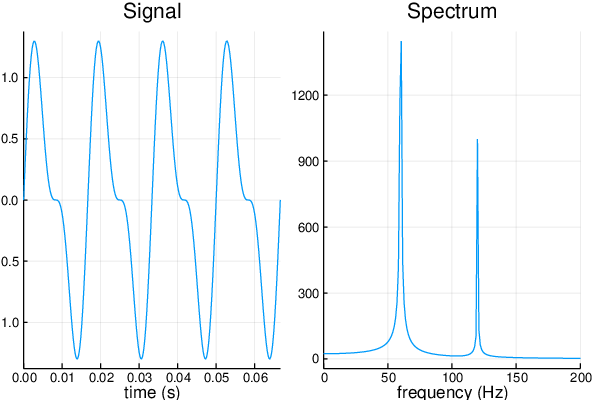

Examples
Here you can find some basic examples of how to use this package.
Spectrum of a 1D Signal
This example shows how to obtain and plot the spectrum of a simple, real-valued signal with a second-order harmonic using FFTW and Plots.
using Plots
using FFTW
# Number of points
N = 2^12 - 1
# Sample spacing
Ts = 1 / (1.1 * N)
# Sample rate
fs = 1 / Ts
# Start time
t0 = 0
tmax = t0 + N * Ts
# time coordinate
t = t0:Ts:tmax
# The underlying signal here is the sum of a sine wave at 60 cycles per second
# and its second harmonic (120 cycles per second) at half amplitude. We have
# discrete observations (samples) of this signal at each time `t`, with `fs`
# samples per second.
signal = sin.(2π * 60 * t) + .5 * sin.(2π * 120 * t)
# The `fft` function calculates the (discrete) Fourier transform of its input.
# The first half of the returned array contains the positive frequencies, while
# the second half contains the negative ones. For visualization purposes, we
# rearrange the array to have the zero-frequency at the center.
F = fftshift(fft(signal))
freqs = fftshift(fftfreq(length(t), fs))
# Plot
time_domain = plot(t, signal, title="Signal", xlims=(0, 4 / 60), xlabel="time (s)", label="")
freq_domain = plot(freqs, abs.(F), title="Spectrum", xlims=(0, 200), xlabel="frequency (Hz)", label="")
plot(time_domain, freq_domain, layout = 2)
savefig("Wave.pdf")